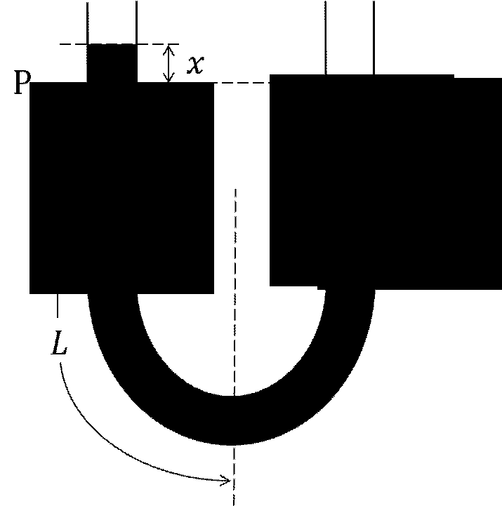

문제 2
아래 그림과 같이 내경이 균일한 U자형 관에 액체가 평형상태에서 좌우 관의 P 위치까지 채워져 있다. 이 때 오른쪽 관에 입을 대고 아래로 살짝 불어주면 그림과 같이 오른쪽 관의 수위가 \(x\)만큼 내려가고, 왼쪽관의 수위는 \(x\)만큼 올라간 후 단진동 운동을 한다. 관의 단면적을 \(A\), 유체의 밀도를 \(\rho\), 중력가속도를 \(g\)라 하고 유체의 점성은 무시한다. 또한 \(x \ll L\)이다.

(가) 아래 그림과 같은 상태에서 유체 전체에 작용하는 순수(알짜) 압력을 구하시오. [20점]
(나) 유체 전체에 대한 운동방정식을 세우고, 가속도를 구하시오. [40점]
(다) 유체의 진동주기를 구하시오. [40점]